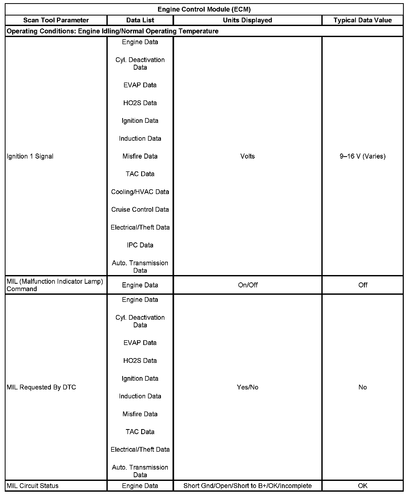

Scan Tool Data List
SCAN TOOL DATA LIST
Body Control Module (BCM):

Driver Door Switch:
Engine Control Module (ECM) (Part 1):

Engine Control Module (ECM) (Part 2):
Engine Control Module (ECM) (Part 3):

Engine Control Module (ECM) (Part 4):
Instrument Panel Cluster (IPC):
Passenger Door Switch:
The scan tool data lists contain all the instrument panel, gages, and console related parameters that are available on the scan tool. The parameters in the list are arranged in alphabetical order. The data list column indicates the location of the parameter within the scan tool menu selections.
Use the scan tool data lists as directed by a diagnostic table or in order to supplement the diagnostic procedures. Begin all of the diagnostic procedures with Diagnostic System Check - Vehicle. Initial Inspection and Diagnostic Overview
Use the scan tool data lists only after the following is determined:
- There is no published DTC procedure nor published symptom procedure for the customer concern.
- The DTC or symptom procedure indicated by the diagnostic system check does not resolve the customer concern.
The typical data values are obtained from a properly operating vehicle under the conditions specified in the first row of the scan tool data list table. Comparison of the parameter values from the suspect vehicle with the typical data values may reveal the source of the customer concern.